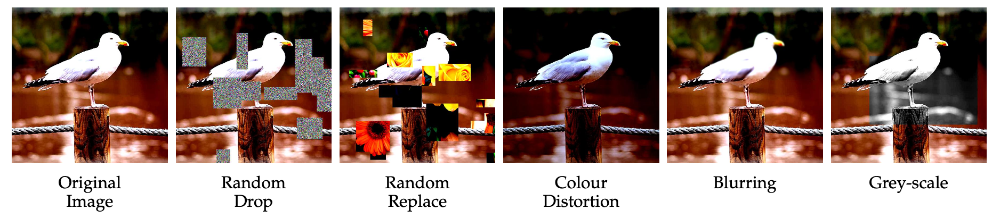
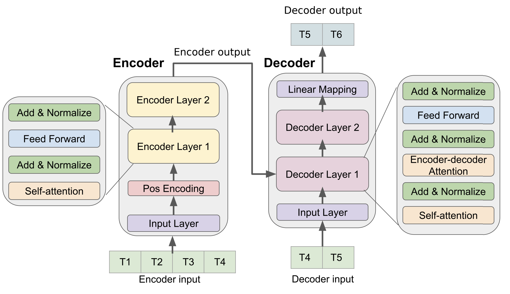

Transformers
Transformers
Architecture
Attentional mechanisms are so powerful that recurrent networks are not even needed anymore. Transformer networks (Vaswani et al., 2017) use self-attention in a purely feedforward architecture and outperform recurrent architectures. They are used in Google BERT and OpenAI GPT-2/3 for text understanding (e.g. search engine queries).

Transformer networks use an encoder-decoder architecture, each with 6 stacked layers.

Each layer of the encoder processes the n words of the input sentence in parallel. Word embeddings (as in word2vec) of dimension 512 are used as inputs (but learned end-to-end).

Two operations are performed on each word embedding \mathbf{x}_i:
- self-attention vector \mathbf{z}_i depending on the other words.
- a regular feedforward layer to obtain a new representation \mathbf{r}_i (shared among all words).

Self-attention
The first step of self-attention is to compute for each word three vectors of length d_k = 64 from the embeddings \mathbf{x}_i or previous representations \mathbf{r}_i (d = 512).
- The query \mathbf{q}_i using W^Q.
- The key \mathbf{k}_i using W^K.
- The value \mathbf{v}_i using W^V.

This operation can be done in parallel over all words:

Why query / key / value? This a concept inspired from recommendation systems / databases. A Python dictionary is a set of key / value entries:
tel = {
'jack': 4098,
'sape': 4139
}The query would ask the dictionary to iterate over all entries and return the value associated to the key equal or close to the query.
tel['jacky'] # 4098This would be some sort of fuzzy dictionary.
In attentional RNNs, the attention scores were used by each word generated by the decoder to decide which input word is relevant.
If we apply the same idea to the same sentence (self-attention), the attention score tells how much words of the same sentence are related to each other (context).
The animal didn’t cross the street because it was too tired.
The goal is to learn a representation for the word it that contains information about the animal, not the street.
Each word \mathbf{x}_i of the sentence generates its query \mathbf{q}_i, key \mathbf{k}_i and value \mathbf{v}_i.
For all other words \mathbf{x}_j, we compute the match between the query \mathbf{q}_i and the keys \mathbf{k}_j with a dot product:
e_{i, j} = \mathbf{q}_i^T \, \mathbf{k}_j
We normalize the scores by dividing by \sqrt{d_k} = 8 and apply a softmax:
a_{i, j} = \text{softmax}(\dfrac{\mathbf{q}_i^T \, \mathbf{k}_j}{\sqrt{d_k}})
The new representation \mathbf{z}_i of the word \mathbf{x}_i is a weighted sum of the values of all other words, weighted by the attention score:
\mathbf{z}_i = \sum_{j} a_{i, j} \, \mathbf{v}_j

If we concatenate the word embeddings into a n\times d matrix X, self-attention only implies matrix multiplications and a row-based softmax:
\begin{cases} Q = X \times W^Q \\ K = X \times W^K \\ V = X \times W^V \\ Z = \text{softmax}(\dfrac{Q \times K^T}{\sqrt{d_k}}) \times V \\ \end{cases}

Note 1: everything is differentiable, backpropagation will work.
Note 2: the weight matrices do not depend on the length n of the sentence.
Multi-headed self-attention
In the sentence The animal didn’t cross the street because it was too tired., the new representation for the word it will hopefully contain features of the word animal after training.
But what if the sentence was The animal didn’t cross the street because it was too wide.? The representation of it should be linked to street in that context. This is not possible with a single set of matrices W^Q, W^K and W^V, as they would average every possible context and end up being useless.
The solution is to use multiple attention heads (h=8) with their own matrices W^Q_k, W^K_k and W^V_k.

Each attention head will output a vector \mathbf{z}_i of size d=512 for each word. How do we combine them?

The proposed solution is based on ensemble learning (stacking): let another matrix W^O decide which attention head to trust… 8 \times 512 rows, 512 columns.


Each attention head learns a different context:
itrefers toanimal.itrefers tostreet.- etc.
The original transformer paper in 2017 used 8 attention heads. OpenAI’s GPT-3 uses 96 attention heads…
Encoder layer
Multi-headed self-attention produces a vector \mathbf{z}_i for each word of the sentence. A regular feedforward MLP transforms it into a new representation \mathbf{r}_i.
- one input layer with 512 neurons.
- one hidden layer with 2048 neurons and a ReLU activation function.
- one output layer with 512 neurons.
The same NN is applied on all words, it does not depend on the length n of the sentence.
Positional encoding
As each word is processed in parallel, the order of the words in the sentence is lost.
street was animal tired the the because it cross too didn’t
We need to explicitly provide that information in the input using positional encoding.
A simple method would be to append an index i = 1, 2, \ldots, n to the word embeddings, but it is not very robust.

If the elements of the 512-d embeddings are numbers between 0 and 1, concatenating an integer between 1 and n will unbalance the dimensions. Normalizing that integer between 0 and 1 requires to know n in advance, this introduces a maximal sentence length…
How about we append the binary code of that integer?

Sounds good, we have numbers between 0 and 1, and we just need to use enough bits to encode very long sentences. However, representing a binary value (0 or 1) with a 64 bits floating number is a waste of computational resources.
We can notice that the bits of the integers oscillate at various frequencies:
- the lower bit oscillates every number.
- the bit before oscillates every two numbers.
- etc.
We could also represent the position of a word using sine and cosine functions at different frequencies (Fourier basis). We create a vector, where each element oscillates at increasing frequencies. The “code” for each position in the sentence is unique.

In practice, a 512-d vector is created using sine and cosine functions.
\begin{cases} t(\text{pos}, 2i) = \sin(\dfrac{\text{pos}}{10000^{2 i / 512}})\\ t(\text{pos}, 2i + 1) = \cos(\dfrac{\text{pos}}{10000^{2 i / 512}})\\ \end{cases}

The positional encoding vector is added element-wise to the embedding, not concatenated!
\mathbf{x}_{i} = \mathbf{x}^\text{embed}_{i} + \mathbf{t}_i
Layer normalization
The last tricks of the encoder layers are:
- skip connections (residual layer)
- layer normalization
The input X is added to the output of the multi-headed self-attention and normalized (zero mean, unit variance).
Layer normalization (Ba et al., 2016) is an alternative to batch normalization, where the mean and variance are computed over single vectors, not over a minibatch:
\mathbf{z} \leftarrow \dfrac{\mathbf{z} - \mu}{\sigma}
with \mu = \dfrac{1}{d} \displaystyle\sum_{i=1}^d z_i and \sigma = \dfrac{1}{d} \displaystyle\sum_{i=1}^d (z_i - \mu)^2.
The feedforward network also uses a skip connection and layer normalization.

We can now stack 6 (or more, 96 in GPT-3) of these encoder layers and use the final representation of each word as an input to the decoder.

Decoder
In the first step of decoding, the final representations of the encoder are used as query and value vectors of the decoder to produce the first word. The input to the decoder is a “start of sentence” symbol.

The decoder is autoregressive: it outputs words one at a time, using the previously generated words as an input.

Each decoder layer has two multi-head attention sub-layers:
- A self-attention sub-layer with query/key/values coming from the generated sentence.
- An encoder-decoder attention sub-layer, with the query coming from the generated sentence and the key/value from the encoder.
The encoder-decoder attention is the regular attentional mechanism used in seq2seq architectures. Apart from this additional sub-layer, the same residual connection and layer normalization mechanisms are used.

When the sentence has been fully generated (up to the <eos> symbol), masked self-attention has to applied in order for a word in the middle of the sentence to not “see” the solution in the input when learning. Learning occurs on minibatches of sentences, not on single words.

The output of the decoder is a simple softmax classification layer, predicting the one-hot encoding of the word using a vocabulary (vocab_size=25000).

Results
The transformer is trained on the WMT datasets:
- English-French: 36M sentences, 32000 unique words.
- English-German: 4.5M sentences, 37000 unique words.
Cross-entropy loss, Adam optimizer with scheduling, dropout. Training took 3.5 days on 8 P100 GPUs. The sentences can have different lengths, as the decoder is autoregressive. The transformer network beat the state-of-the-art performance in translation with less computations and without any RNN.

Self-supervised Transformers
The Transformer is considered as the AlexNet moment of natural language processing (NLP). However, it is limited to supervised learning of sentence-based translation.
Two families of architectures have been developed from that idea to perform all NLP tasks using unsupervised pretraining or self-supervised training:
- BERT (Bidirectional Encoder Representations from Transformers) from Google (Devlin et al., 2019).
- GPT (Generative Pre-trained Transformer) from OpenAI https://openai.com/blog/better-language-models/.
BERT
BERT (Devlin et al., 2019) only uses the encoder of the transformer (12 layers, 12 attention heads, d = 768). BERT is pretrained on two different unsupervised tasks before being fine-tuned on supervised tasks.
- Task 1: Masked language model. Sentences from BooksCorpus and Wikipedia (3.3G words) are presented to BERT during pre-training, with 15% of the words masked. The goal is to predict the masked words from the final representations using a shallow FNN.

- Task 2: Next sentence prediction. Two sentences are presented to BERT. The goal is to predict from the first representation whether the second sentence should follow the first.

Once BERT is pretrained, one can use transfer learning with or without fine-tuning from the high-level representations to perform:
- sentiment analysis / spam detection
- question answering


GPT
GPT is an autoregressive language model learning to predict the next word using only the transformer’s decoder.

Autoregression mimicks a LSTM that would output words one at a time.

GPT-2 comes in various sizes, with increasing performance. GPT-3 is even bigger, with 175 billion parameters and a much larger training corpus.

GPT can be fine-tuned (transfer learning) to perform machine translation.

GPT can be fine-tuned to summarize Wikipedia articles.


Try transformers at https://huggingface.co/
pip install transformersGithub and OpenAI trained a GPT-3-like architecture on the available open source code. Copilot is able to “autocomplete” the code based on a simple comment/docstring.

All NLP tasks (translation, sentence classification, text generation) are now done using transformer-like architectures (BERT, GPT), unsupervisedly pre-trained on huge corpuses. BERT can be used for feature extraction, while GPT is more generative. Transformer architectures seem to scale: more parameters = better performance. Is there a limit?
The price to pay is that these models are very expensive to train (training one instance of GPT-3 costs 12M$) and to use (GPT-3 is only accessible with an API). Many attempts have been made to reduce the size of these models while keeping a satisfying performance.
- DistilBERT, RoBERTa, BART, T5, XLNet…
See https://medium.com/mlearning-ai/recent-language-models-9fcf1b5f17f5.
Vision transformers
ViT
The transformer architecture can also be applied to computer vision, by splitting images into a sequence of small patches (16x16). The sequence of vectors can then be classified by the output of the transformer using labels.

The Vision Transformer (ViT, (Dosovitskiy et al., 2021)) outperforms state-of-the-art CNNs while requiring less computations.


SiT
ViT only works on big supervised datasets (ImageNet). Can we benefit from self-supervised learning as in BERT or GPT? The Self-supervised Vision Transformer (SiT) (Atito et al., 2021) has an denoising autoencoder-like structure, reconstructing corrupted patches autoregressively.

Self-supervised learning is possible through from data augmentation techniques. Various corruptions (masking, replacing, color distortion, blurring) are applied to the input image, but SiT must reconstruct the original image (denoising autoencoder).

An auxiliary rotation loss forces SiT to predict the orientation of the image (e.g. 30°). Another auxiliary contrastive loss ensures that high-level representations are different for different images.

DINO
A recent approach for self-supervised learning has been proposed by Facebook AI researchers using self-distillation (Self-distillation with no labels - DINO, (Caron et al., 2021)). The images are split into global and local patches at different scales. Global patches contain label-related information (whole objects) while local patches contain finer details.

The idea of self-distillation in DINO is to use two similar ViT networks to classify the patches. The teacher network gets the global views as an input, while the student network get both the local and global ones. Both have a MLP head to predict the softmax probabilities, but do not use any labels.

The student tries to imitate the output of the teacher, by minimizing the cross-entropy (or KL divergence) between the two probability distributions. The teacher slowly integrates the weights of the student (momentum or exponentially moving average ema):
\theta_\text{teacher} \leftarrow \beta \, \theta_\text{teacher} + (1 - \beta) \, \theta_\text{student}

The predicted classes do not matter when pre-training, as there is no ground truth. The only thing that matters is the high-level representation of an image before the softmax output, which can be used for transfer learning. Self-distillation forces the representations to be meaningful at both the global and local scales, as the teacher gets global views. ImageNet classes are already separated in the high-level representations: a simple kNN (k-nearest neighbour) classifier achieves 74.5% accuracy (vs. 79.3% for a supervised ResNet50).

More interestingly, by looking at the self-attention layers, one can obtain saliency maps that perform object segmentation without ever having been trained to!
Time series transformers
Transformers can also be used for time-series classification or forecasting instead of RNNs. Example: weather forecasting, market prices, etc.

